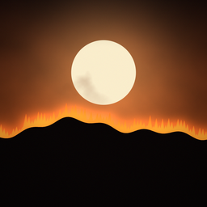

SURVIVAL AT NOONTrue survival stories, told from the record.August 5, 1949. Gates of the Mountains, Montana. Thirteen men died; three survived.
Every statement in the narration was checked against the sources below before it was recorded, most of them primary: the 1949 Board of Review report and hearing transcript, Richard Rothermel's 1993 Forest Service reconstruction, and the National Wildfire Coordinating Group staff-ride materials. Where sources disagree, the narration says so or avoids a number, and fire-spread times and speeds are estimates (Rothermel's).
The pictures are illustrated reconstructions drawn for this video. The terrain, cross-section and maps come from real elevation data for Mann Gulch; positions and timing follow Rothermel (1993) and the Board of Review. People are shown as silhouettes: we don't invent faces, dialogue or scenes that the record doesn't support. Photographs are used only where they are US government works.
AI disclosure: the narration voice is synthetic (Google Gemini text-to-speech), and the music was generated with ElevenLabs Music. The script, research and illustrations are ours.
| ID | Source |
|---|---|
| TURNER99 | Dave Turner (Helena NF), "The Thirteenth Fire" (1998–99; also Forest History Today 1999) |
| NSA-SURV | Breslin, D. "The Survivors: Dodge, Rumsey, and Sallee," National Smokejumper Association |
| NSA-BIO | NSA 75th-anniversary biographies of the 13 (2024) |
| MGR | Mann Gulch Remembered (Helena HS X-CEL class, 1999) |
| SALLEE-NPR | NPR "The Story" interview with Bob Sallee (transcript) |
| BEACON14 | Flathead Beacon, 29 May 2014 (Sallee obituary) |
| WEICK93 | Weick, K.E. 1993. "The Collapse of Sensemaking in Organizations: The Mann Gulch Disaster." ASQ 38(4): 628–652 |
| MAC92 | Maclean, N. 1992. Young Men and Fire. U. Chicago Press |
| FHS | Forest History Society pages on Mann Gulch |
| JENKINS93 | Starr Jenkins, Some of the Men of Mann Gulch (1993) |
| ID | Source |
|---|---|
| WIKI | Wikipedia "Mann Gulch fire", "Young Men and Fire" |
| LIFE49 | LIFE, 22 Aug 1949, "Smokejumpers Suffer Ordeal by Fire" (Stackpole) |
Each factual statement in the video, as narrated or shown on screen, with where it comes from. Page numbers refer to the original documents. sources differ marks claims where the record is not unanimous; the narration hedges those.
| # | Claim | Source | Note |
|---|---|---|---|
| C2 | 16 jumpers aboard; 1 airsick (Merle Stratton) stayed aboard; 15 jumped. So 15 men besides Dodge were on the slope at 5:55 (14 jumpers + Harrison) | BOR49-R p.3, p.9; BOR49-T p.76–77 (Cooley), p.134 (Dodge); NRHP99 §8 p.2 | ROT93 "18-man crew" is a slip; never use 18 |
| C3 | 13 died: 12 smokejumpers and fire guard Harrison. Survivors: Dodge, Sallee, Rumsey | BOR49-R p.14; BROCH97 p.2; ROT93 | |
| C10 | Gates of the Mountains is about 20 mi north of Helena | ROT93 | |
| C11 | Lewis named it the "gates of the rocky mountains" in 1805 | LCJ1805 (19 Jul 1805) | Say "Meriwether Lewis, in 1805" |
| C12 | Mann Gulch enters the Missouri from the east, just downriver (about ¾ mi below Meriwether) | ROT93; MAP67 | |
| C13 | Funnel-shaped: narrow at the river, half a mile wide at its head | NRHP99 §7 p.0; ROT93 | River width differs (NRHP "about 200 yards" vs ROT93 "¼ mi"), so no number in the narration |
| C14 | The south ridge is the higher one | ROT93 | |
| C15 | South side (north-facing): dense Douglas fir. North side: grass with pine stringers | NRHP99 §8 p.1; TURNER99 p.3–4; ROT93 | MGR p.16 swaps the aspects; ignore it |
| C16 | Grass 2–3 ft tall, fully cured | NRHP99 §8 p.1; ROT93 | |
| C17 | North slope near 76 % near the top | ROT93; NRHP99 §8 p.5 | |
| C18 | Rimrock 6–12 ft high | ROT93 | |
| C19 | Heat wave; 97 °F in Helena | ROT93; USFS-MSO (97–100 °F, 1–5 Aug) | |
| C20 | A lightning storm the day before started fires; one was on the ridge above Mann Gulch | NRHP99 §8 p.1; TURNER99 p.4; ROT93 | |
| C21 | Smoke reported around noon | ROT93 (12:25); BOR49-T p.21; FR929 (11:45) | Times differ (10:00–12:30), so say "around noon" |
| C22 | Roadless area; jumpers from Missoula, ~100 mi west | ROT93 | |
| C23 | Smokejumping about 10 years old; no smokejumper had died fighting fire | ROT93; NWCG-FG p.8 | |
| C24 | C-47 left Missoula at 2:30 with 16 jumpers, a full load | BOR49-R p.9; BOR49-T p.34 ("Sixteen is a C-47 load"), p.73 | ROT93 says DC-3 (same airframe family). Say C-47 |
| C25 | Dodge was first out | BOR49-T p.76 (Cooley); TURNER99 p.7 | |
| C26 | Dodge was 33 | NRHP99 §8 p.3; NSA-SURV (b. 16 Nov 1915) | |
| C27 | Experienced; "barely knew this crew"; knew only three by name (Hellman, McVey, Thol) | BOR49-T (Dodge to Cochran); NRHP99 (8th season jumping); NWCG-FG p.7 | |
| C28 | Sallee was 17, fudged his age, first fire jump | MGR p.85 (b. 18 Aug 1931); NSA-SURV ("fibbed about his age"); SALLEE-NPR p.1; BOR49-T p.83 (first fire jump) | NRHP99 says 20, probably his age on FS paperwork |
| C29 | Rumsey 21, also his first fire jump | NRHP99 roster; BOR49-T | TURNER99 "17" is wrong |
| C30 | Fire 50–60 acres at the jump, on the ridge across the gulch | BOR49-R p.9; ROT93 Fig. 1 | |
| C31 | Turbulence; plane climbed; cargo scattered | ROT93 | |
| C32 | Radio's chute failed; radio smashed | BOR49-R p.10; BOR49-T p.77; ROT93 | |
| C33 | Gear assembled by about 5 p.m. | BOR49-R p.10; ROT93 | |
| C34 | Sallee: "I took a look at the fire and decided it wasn't bad." | BOR49-R p.10 (quoted statement); ROT93 | Exact wording |
| C35 | Dodge sent Hellman and the crew down the north side toward the river and went ahead toward the shouting | ROT93; BOR49-T p.134–135 | |
| C36 | Harrison, 20, Meriwether fire guard, first to fight the fire, alone | NRHP99 roster; ROT93; FR929 (first attack 1300, one man) | |
| C37 | Door note: "Gone to the fire. Jim." | BOR49-T (Jansson: "as I recall"); BOR49-R p.10 | NRHP99/TURNER99 also cite "Be back at 3:00 PM". Say only "Gone to the fire. Jim." |
| C38 | The fire was climbing faster than anyone could run | ROT93 (600–750 ft/min ≈ 7–8.5 mph) vs crew ~4 mph | Rothermel's estimate |
| C39 | Dodge judged the ridge unsafe; quick lunch | BOR49-R p.10–11; ROT93 | |
| C40 | Escape fire at about 5:55, lit with a match | ROT93, Fig. 1; BOR49-T, ("go-for" match); NWCG-FG p.16 (book of paper matches) | RUMSEY61 remembers a lighter; Dodge's own testimony wins |
| C41 | "Kneeling" / bent down to light it | BOR49-T (Rumsey: "bend down and light it") | |
| C42 | The plan: attack from the safer, upwind side near the river | ROT93 | |
| C43 | 3:30 Helena wind shift to south (24 mph); the canyon layout makes a turbulent up-gulch wind | ROT93 | |
| C44 | The crew had never been taught the escape fire | BOR49-T (Sallee: "never given any instructions on setting fires like that") | |
| C45 | Jansson: 20–30 mph, gusts to 40, at the mouth | ROT93 | |
| C46 | Spot fires in the timber near the mouth, below the crew | ROT93, Fig. 1 | Exact time disputed (MAP49 1710 vs 5:30), so no time in the narration |
| C47 | Mechanism debated: thunderstorm downdraft vs whirlwinds | ROT93 | |
| C48 | About 5:40 Dodge and Harrison caught up; about 5 more minutes toward the river | ROT93; BOR49-R p.11 | |
| C49 | About 5:45 Dodge saw fire below on their side, coming up | BOR49-T ("coming up the ridge toward us"); ROT93 | |
| C50 | Turned back up the gulch, climbing toward the ridge | BOR49-T | |
| C51 | Fire 150–200 yd away at the turn (Dodge's estimate) | ROT93 | |
| C52 | Not yet running (~2 mph), carrying packs and tools, loose rock | ROT93 | |
| C53 | Navon, 28, former paratrooper, photographed the fire | ROT93; NRHP99 roster (28); NWCG-FG p.13 | TURNER99 says 25; NRHP99, LIFE49 and NSA say 28 |
| C54 | Fire moved from timber into grass | ROT93 | |
| C55 | Grass burns faster; uphill with the wind behind it; the slope slowed the men and sped the fire | ROT93 | |
| C56 | About 5:53 Dodge ordered heavy tools dropped | ROT93; BOR49-T ("drop all heavy equipment"); NWCG-FG p.14 | BOR49-R says ~5:50, so "about" covers it. His words weren't "Drop your tools!" |
| C57 | Fire under 100 yd behind (Dodge: 75–100) | ROT93 | |
| C58 | Tools found together in one small area | ROT93 (official report: within a 100-ft circle) | Myth to avoid: "they died because they kept their tools" |
| C59 | Then they ran (~4 mph) | ROT93 | |
| C60 | One man collapsed and was urged on | ROT93 | |
| C61 | The ridge top was a few hundred yards above | ROT93 (240 yd tools→escape fire); TURNER99 p.10 (ridge ~100 yd from escape fire); NWCG-TD stands 3A→5 | |
| C62 | Fire faster than a man can run uphill | = C38 | |
| C63 | About 5:55, out of the trees into grass; Dodge stopped | ROT93 | |
| C64 | Dodge: "…upon looking up, I had an area of 100 feet square that was ablaze" | BOR49-T | Quote exactly; the area is ambiguous, so don't interpret it |
| C65 | Idea: burn the fuel away, get inside the burned area | BOR49-T (Dodge); ROT93 | |
| C66 | He hollered for them to come through the flames into the burn; no one did | BOR49-T; ROT93 | |
| C67 | "To hell with this, I am getting out of here!" heard by Dodge, from an unnamed crewman | BOR49-T; BOR49-R p.15 (conclusion 7: "one victim") | Never name the speaker (only Maclean says Hellman) |
| C68 | Rumsey: didn't hear Dodge over the roar; "I remember thinking it was a good idea but could not keep the ridge out of my head." | BOR49-T | Exact wording |
| C69 | Sallee and Rumsey went up the right side to the rimrock and through a gap to the ridge | ROT93; NRHP99 photo #6 | |
| C70 | Sheltered on a rockslide beyond the ridge | ROT93; NRHP99 photo #8 | Size and distance disputed, so give no numbers |
| C71 | Diettert followed them, turned along the slope, died; it was his 19th birthday | NWCG-FG p.17, p.8; TURNER99 p.10; ROT93 (unnamed third jumper); MGR p.31 and NSA-BIO (b. 5 Aug 1930) | |
| C72 | Hellman went up the left side, between the fires; got over the ridge, badly burned | ROT93 | |
| C73 | Dodge lay face down in the burn | ROT93 | |
| C74 | Main fire reached him within the minute (~5:55:30) | ROT93 | Estimate |
| C75 | The rest were caught within a few hundred yards | ROT93 (100–375 yd); USFS-MSO and BROCH97 ("within 300 yards of each other") | |
| C76 | One recovered watch had stopped at 5:57 | BOR49-R p.12 | ROT93 and TURNER99 say Harrison's watch at 5:56, so don't name the owner |
| C77 | Dodge later said the wind lifted him off the ground three times sources differ | ROT93 (via C. E. Hardy, personal communication) | Secondhand. Keep "Dodge later said" |
| C78 | 6:10 he sat up; pockets of fire still burning | BOR49-R p.12; BOR49-T p.136; ROT93 | |
| C79 | Found Sylvia badly burned; moved him to a large rock | BOR49-T p.136; NRHP99 photo #10; TURNER99 p.11 | |
| C80 | Sallee and Rumsey found Hellman alive on the ridge | TURNER99 p.11 (6:20); BOR49-R p.12 | |
| C81 | Rumsey stayed; Dodge and Sallee went to the river and reached the ranger around 9 p.m. | BOR49-R p.12; BOR49-T p.136–137; NRHP99 §8 p.4 (8:50); NWCG-FG p.20 (9:20) | Say "around nine" |
| C82 | Rescuers reached the injured after midnight; both died in a Helena hospital the next day (Aug 6) | USFS-MSO (12:30); NWCG-FG (5:00 a.m.); BOR49-R p.12–13 | The hour of death is disputed, so the narration gives none |
| C83 | Two of the dead were 19 (Diettert, Thol); 9 were first-year smokejumpers | NRHP99 roster; BOR49-T (Granger: "9 first-year smokejumpers and 4 second-year") | |
| C84 | The 13 names | BROCH97 p.6; NRHP99 roster; memorial board (see Images below) | Spellings: Philip McVey, Marvin "Dick" Sherman, Henry J. Thol Jr. |
| C85 | Burned for days, over 4,000 acres | FR929 (4,339 ac; controlled 9 Aug); NWCG-WEB Stand 5 (4,300) | Other sources say 4,500 or 5,000, so "more than four thousand" |
| C86 | Gisborne, the leading fire scientist in the region, died of a heart attack near the gulch that fall | ROT93; TURNER99 p.14 (9 Nov 1949) | |
| C87 | The Board found no evidence of disregard of risk; the escape fire didn't impede escape | BOR49-R p.15–16 (conclusions 9, 12) | |
| C88 | Thol's suit was dismissed without a ruling on negligence (workers' comp exclusive) | THOL54 (218 F.2d 12, 9th Cir. 1954); BOR49-R p.7 (Thol Sr. objections) | Don't say "courts cleared the FS" |
| C89 | Dodge d. 1955 of Hodgkin's; Rumsey d. 1980 plane crash; Sallee lived to 82 | NSA-SURV; MGR p.82, p.88; BEACON14 | Tier 2. Dodge's age at death: dates give 39, but MGR says 38, so leave it out |
| C90 | Decades later, Rothermel rebuilt the last 20 min with fire models; he calls them estimates | ROT93 | |
| C91 | About 120 ft/min in timber near the river; the crew had a head start at the turn | ROT93; Fig. 2 | Estimate |
| C92 | Crew sped from ~2 mph to ~4 mph | ROT93 | |
| C93 | Fire 120 → 600–700+ ft/min (~7–8 mph) in the grass, uphill | ROT93 (600–750, avg 660) | 660 ft/min = 7.5 mph |
| C94 | Moving toward the ridge put them into lighter, faster-burning fuel | ROT93 | |
| C95 | The lines converge just before 6; "a race that couldn't be won" | ROT93 Fig. 2, title | |
| C96 | The escape fire burned straight upslope instead of with the wind | ROT93 (per Sallee) | |
| C97 | Rothermel's guess: the convection column caused a momentary calm; book matches suggest calm | ROT93 | Framed as "his best guess" |
| C98 | Board recommendations: teach the escape-fire method; intensify fire-behavior study to predict blowups | BOR49-R p.16 (recs 3, 4) | |
| C99 | The Forest Service built a fire lab in Missoula | ROT93 (conceived in the aftermath; 1960) | |
| C100 | Rothermel worked there | ROT93 author bio | |
| C101 | 1957: Mann Gulch was one of 16 fires studied for the Standard Firefighting Orders | TF57 p.1, App. 2, App. 4; NWCG-1018 | Myth to avoid: "Mann Gulch created the 10 Orders" |
| C102 | Pocket guide, last-resort survival: "In light fuels, you may be able to light an escape fire" | IRPG25 pp.29–30 | |
| C103 | Rule: know your way out, make sure everyone knows it, decide before the fire does | IRPG25 p.5 (LCES "established and known to ALL firefighters BEFORE it is needed"); Order 4 (TF57 App. 4; IRPG25) | Paraphrase |
| C104 | Thirteen markers still stand on the slope | NRHP99 §7 pp.1–2 (crosses 1950, granite 1997); FIRELAB 2024 (360° photo of each memorial) | "Markers", not "crosses": Navon's marker may be a Star of David (unverified) |
| C105 | On screen (s47): "16 fatal fires since 1936 reviewed · Mann Gulch among them" | TF57 p.1 (16 tragedy fires since 1936, 79 dead), App. 2 | |
| C106 | Name-card ages: Hellman 24, Sylvia 24 | NRHP99 roster; MGR p.44, p.70; TURNER99; NSA-BIO | Sylvia's sister gives 1923 (age 25); most sources say 24 |
| C107 | Survivor cards: Dodge 1915–1955, Rumsey 1927–1980, Sallee 1931–2014 | NSA-SURV (Dodge b. 16 Nov 1915; Rumsey b. 18 Nov 1927; Sallee b. 18 Aug 1931); MGR p.82, p.88; BEACON14 | Tier 2 |
| C108 | Map card: Missoula to Mann Gulch "about 100 miles" | ROT93 ("a little over 100 mi west") | |
| C109 | On screen (s21): "positions and fire spread follow Rothermel (1993) and the 1949 Board of Review; times are estimates" | method note | Our 3D reconstruction: |
Popular retellings of Mann Gulch include details the 1949 record doesn't support. We didn't use these:
| Claim | Why not | Source |
|---|---|---|
| "It's a death trap" as a Dodge quote | Not in the 1949 record. ROT93 only says Sallee thought he heard Dodge call the thicket a death trap | ⚠️ attributed paraphrase at most; not used in v1 |
| Mann Gulch created the 10 Standard Orders | It was one of 16 fires the 1957 task force reviewed | TF57 |
| They died because they wouldn't drop their tools | The tools were dropped; that finding is from South Canyon (1994) | BOR49-T; PUTNAM95 |
| Dodge yelled "Drop your tools!" / "Join me!" | Record: "drop all heavy equipment", "Up this way" | BOR49-T |
| Hellman said "To hell with this" | Maclean only; the Board says "one victim" | BOR49-R concl. 7 |
| Dodge "had never heard of" an escape fire | He testified "It just seemed the logical thing to do" | BOR49-T p.141 |
| Dodge's escape fire killed men | Board concl. 9; the parents' charge | BOR49-R |
| "Wilderness" in 1949 | It was the Gates of the Mountains Wild Area | ROT93 |
| The watch "melted" | It stopped | BOR49-R p.12 |
| Jansson's clock times (blowup 5:20, MAP49 1710/1720) | Conflict with every other timeline. Don't use specific spot-fire times | #1; §4 |
| "18-man crew" | Rothermel slip | ROT93 |
| Image | Source | Rights |
|---|---|---|
| Memorial board: portraits of the 13 men who died | USDA Forest Service, 1949 (also in the NWCG historical collection) | US federal work, public domain |
| Board of Review report, page 14 | USDA Forest Service, 1949 (NWCG staff-ride library) | US federal work, public domain |
| Rothermel, Figure 1 (map of events) | Rothermel 1993, USDA Forest Service GTR INT-299 | US federal work, public domain |
| Memorial markers on the slope (2013) | USDA Forest Service, Northern Region (via Wikimedia Commons) | US federal work, public domain |
| All other pictures | Drawn for this video | Ours |
We did not use the LIFE magazine photographs of the fire (Peter Stackpole, 1949), which are still under copyright, even where they appear on government websites.
| What | Source |
|---|---|
| Terrain and maps | USGS 3D Elevation Program, via AWS Terrain Tiles |
| Tree positions | USDA NAIP aerial imagery |
| US state outlines (map card) | Natural Earth (public domain) |
| Fire spread and crew positions | Our reconstruction after Rothermel (1993) and the Board of Review (1949); times are estimates |
| Narration | Synthetic voice (Google Gemini TTS) reading our script |
| Music | Generated with ElevenLabs Music |
| Sound effects | Made for this video (synthesized) |
None yet. If you spot an error, open an issue with the time in the video and your source. Corrections will be listed here with the date.